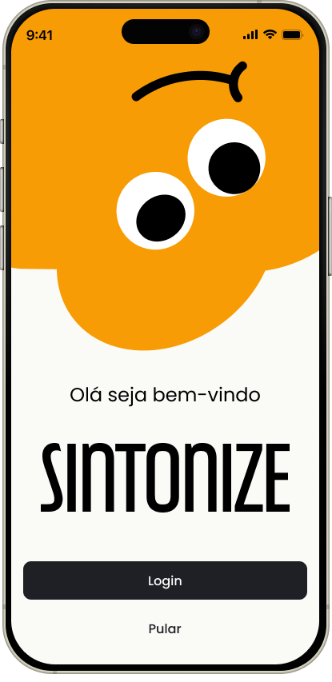
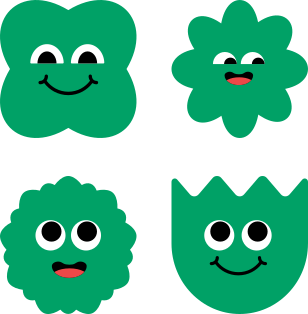
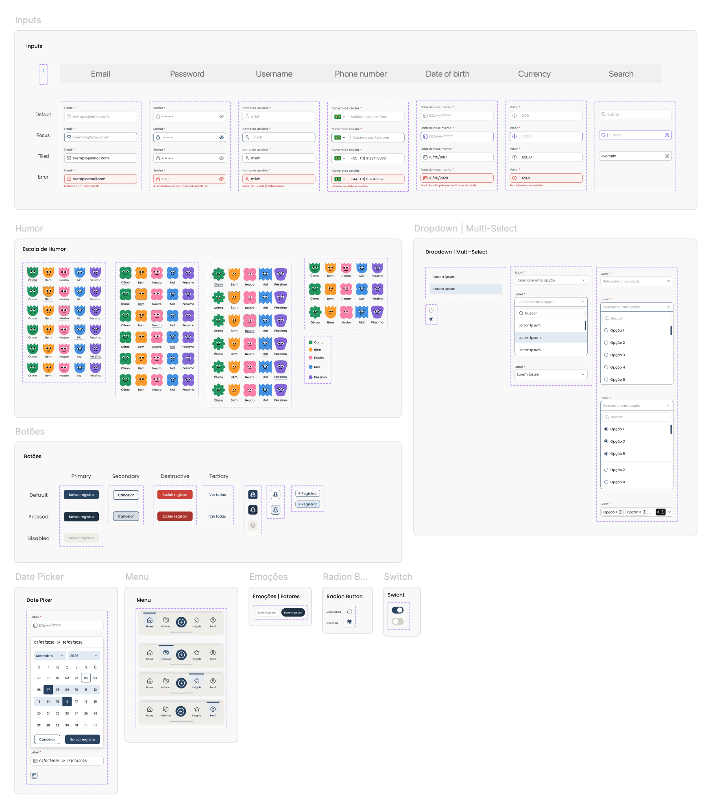
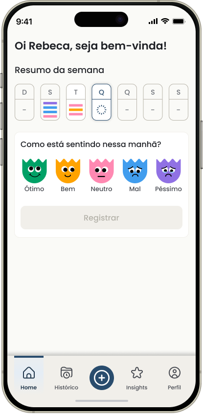
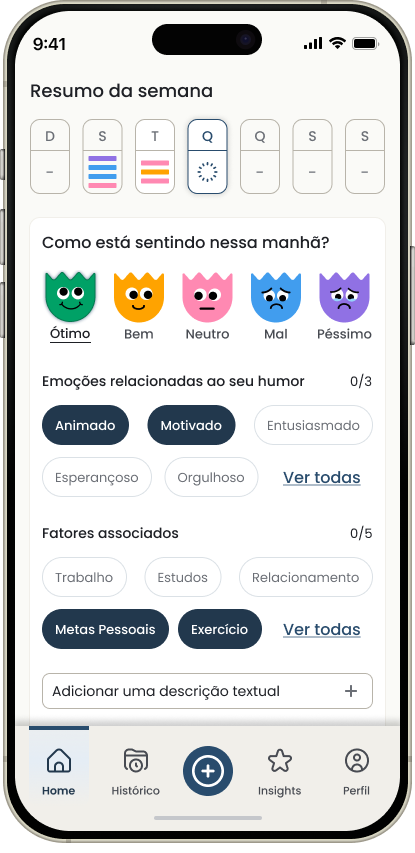
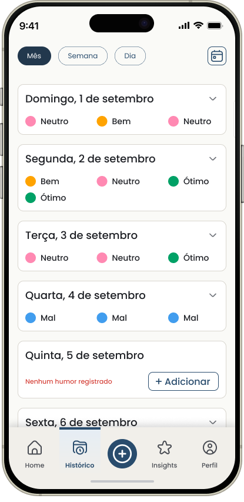
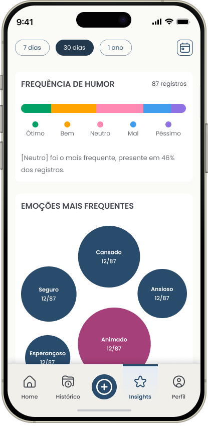
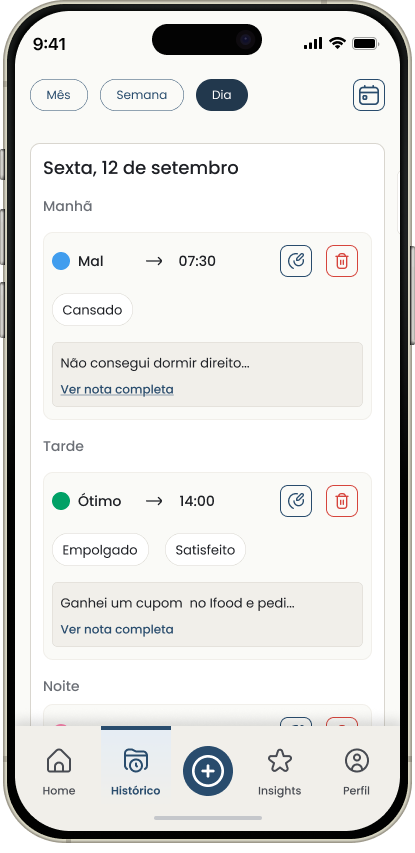
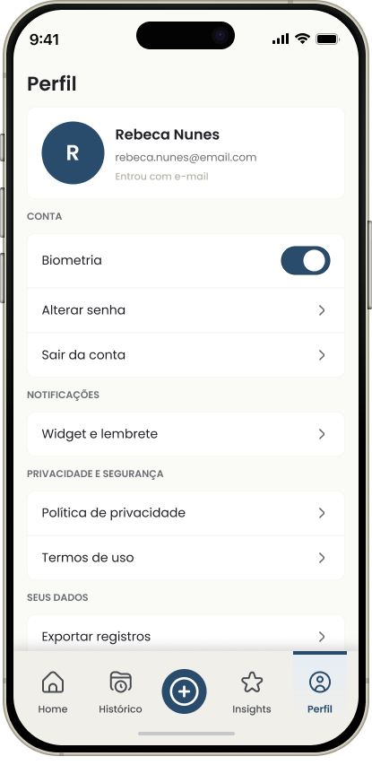

Registrar sem transformar reflexão em tarefa
Diários longos exigem esforço. Trackers simples demais guardam pouco contexto. O desafio era encontrar profundidade sem sacrificar recorrência.
Product Strategy · UX/UI · Design System · AI-assisted Development
SINTONIZE.
Do conceito à Play Store.
Um aplicativo de registro emocional pensado, especificado, desenhado e conduzido até um produto funcional em React Native.
O diferencial deste case está na continuidade entre estratégia, experiência, system design, documentação técnica e execução, não apenas na interface final.
4 DIAS
mockups → app submetido
144 RF's
requisitos funcionais
87 RNF's
requisitos não funcionais
REACT NATIVE
aplicativo funcional

Explorar versão webO Sintonize parte de um check-in que pode durar poucos segundos e permite aprofundamento apenas quando o usuário quiser. Com o histórico acumulado, organiza momentos do dia e revela associações entre humor, emoções, fatores e horários, sem transformar a experiência em diagnóstico, terapia ou gamificação obrigatória.
Diários longos exigem esforço. Trackers simples demais guardam pouco contexto. O desafio era encontrar profundidade sem sacrificar recorrência.
O registro precisava caber na rotina e, ao mesmo tempo, acumular informação suficiente para gerar histórico e padrões compreensíveis.
Atuei de ponta a ponta: da definição do produto à execução técnica assistida por IA.
Problema, posicionamento, benchmark, escopo e MVP.
Arquitetura, jornadas, fluxos, estados e exceções.
Identidade, componentes, variantes e alta fidelidade.
RFs, RNFs, edge cases e critérios de aceite.
Direção técnica da IA com base em requisitos.
QA, debug funcional e preparação para publicação.
A interface foi consequência de decisões anteriores. O produto foi primeiro decomposto em problema, escopo, regras, estados, prioridades e comportamento esperado.
Cadastro, acompanhamento, filtros, status e histórico.
Estratégia & MVP
Regras de negócio
Arquitetura de informação
Fluxos & estados
Design System
High fidelity
Spec técnica → React Native
Os mockups foram tratados como especificação visual do produto, cobrindo diferentes perfis, estados, ações críticas e momentos de uso, não apenas o happy path.
Mais do que desenhar páginas, estruturei como a mesma funcionalidade deveria se comportar em contextos diferentes.
Algumas escolhas foram usadas para reduzir fricção sem simplificar demais o produto.
Decisão: aprofundamento progressivo, deixando contexto adicional para quando fizer sentido.
Decisão: preservar registros por períodos e manter os momentos separados.
Decisão: acesso colapsado e bottom sheet para aprofundamento opcional.
Decisão: linguagem associativa e rastreável aos registros, sem diagnóstico ou causalidade.
O sistema visual foi criado para sustentar diferentes estados e fluxos. No arquivo, componentes como inputs, botões, dropdowns, multi-selects, date picker, nav bar, escala de humor, chips, radio e switch possuem variações e estados documentados.
Títulos
H1
Registro salvo
H2
Como você influenciou?
H3
Emoções específicas
Corpo e labels
Body
Registre seu humor:
Body medium
3 emoções por registro
Label
Nota (opcional)
Placeholder
O que aconteceu...
Estados e metadados
Helper text
0/3 selecionados
Error message
Senha incorreta
Caption
Hoje, 14:32 · 210/1000
Botões e navegação
Tab bar
Histórico

Componentes recorrentes
Escala de humor com estados Ótimo, Bem, Neutro, Mal, Péssimo e Default; Nav Bar com Home, Histórico, Insights e Perfil; Dropdown e Multi-select em Default, Open e Filled; botões Primary, Secondary, Destructive e Tertiary com estados de interação.

O case conecta componente, estado e aplicação real, em vez de mostrar uma prancha isolada de UI kit.
Default + cinco estados documentados.
O mesmo componente sustenta o core flow em diferentes estados.
Default → Focus → Filled → Error.
Estados previsíveis facilitam implementação e QA.
Os protótipos finais cobrem navegação territorial, consulta pública, operações administrativas e gestão de dados.

Home
Registro protagonista e leitura rápida da semana.

Registro
Aprofundamento progressivo por emoções, fatores e nota.

Histórico
Momentos permanecem separados para preservar a variação do dia.

Insights
Padrões apresentados de forma descritiva, não clínica.

Visualização completa do dia
Aprofundamento dos registros de um dia

Perfil
Página de configuração de conta, privacidade e segurança
O handoff não terminou em mockups. A documentação formalizou comportamento, limites, exceções, acessibilidade e critérios necessários para implementação.
Escopo, regras de negócio, arquitetura e priorização.
O que cada fluxo precisa fazer e como validar se está correto.
Offline, sincronização, segurança, acessibilidade, crashes, conflitos e migração.
Com produto, estados e requisitos suficientemente maduros, usei IA como camada de execução técnica para acelerar a implementação em React Native, sem transferir à ferramenta as decisões de produto.
Princípio de execução do projeto
"A velocidade não veio de pular etapas. Veio de tomar as decisões antes do código."
Decomposição
Quebrei o produto em módulos, estados e regras antes de solicitar implementação.
Direção da IA
Prompts técnicos foram guiados por documentação e critérios de aceite.
Debug
Diferenciei problemas de UI, navegação, persistência e regra de negócio.
Validação
Comparei o comportamento implementado com requisitos e edge cases.
Depois que as decisões mais caras já estavam resolvidas fora do código, o ciclo de implementação pôde acontecer com velocidade.
Base React Native, navegação e estrutura inicial.
Registro, histórico, persistência e estados centrais.
Conta, exceções, refinamentos e correções.
Validações finais, build e submissão.
Além do aplicativo mobile, desenvolvi uma versão web navegável para tornar a experiência acessível diretamente pelo navegador e permitir que os principais fluxos e interações sejam explorados sem necessidade de instalação.
O case também pode ser vivido.
A demonstração web funciona como uma forma prática de apresentar o comportamento do produto, conectando as decisões documentadas neste case à experiência real de uso.
Abrir versão navegável